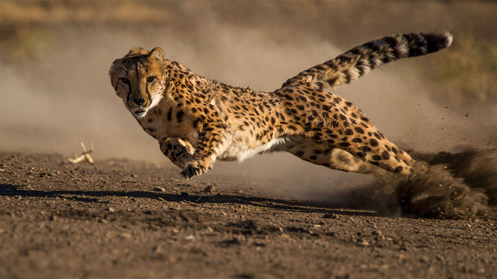
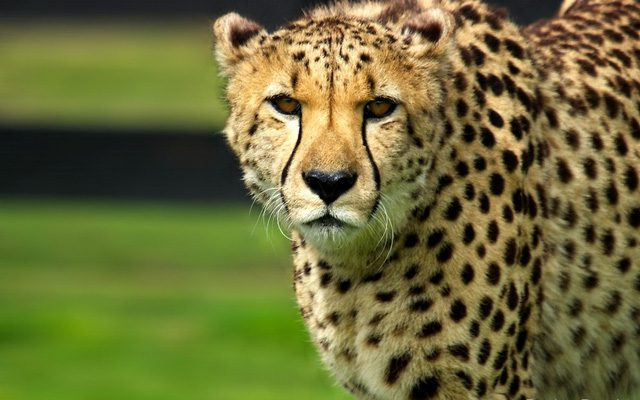
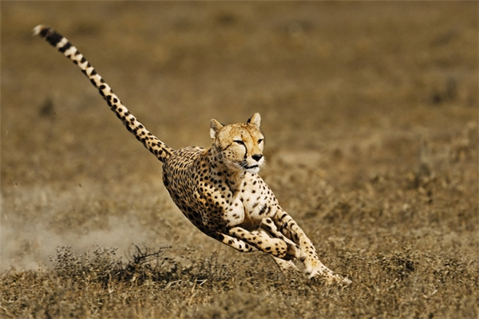
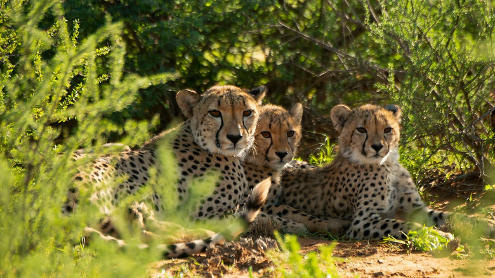
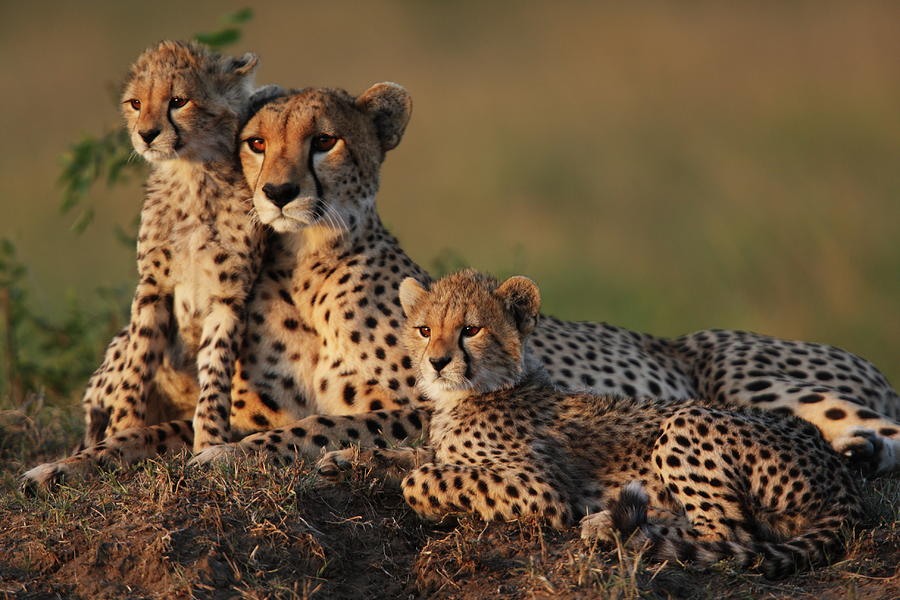

Cheetah: Động vật trên cạn nhanh nhất Trái Đất
1. Sơ lược về loài báo Cheetah
1.1 Báo săn Cheetah có vận tốc lên tới 112 km/h
Báo Cheetah còn có tên gọi là báo đốm, báo Gêpa. Báo Cheetah là loài động vật trên cạn nhanh nhất trên thế giới. Chúng có thể đạt tốc độ tối đa khoảng 113 km một giờ và được xếp vào nhóm những loài động vật săn mồi đáng sợ bậc nhất trên mặt đất.
re1.2 Đặc điểm nhận dạng
Một cách để luôn nhận ra một con báo Cheetah là những đường dài màu đen chạy từ bên trong mỗi mắt đến miệng. Chúng thường được gọi là “đường nước mắt”. Và các nhà khoa học tin rằng chúng giúp bảo vệ mắt của báo gêpa khỏi ánh nắng gay gắt và giúp chúng có thể nhìn xa. Một con báo Ghê-pa trưởng thành cân nặng trung bình vào khoảng 65 đến 70 kg thậm chí lên đến 72 kg. Tổng chiều dài cơ thể từ 1,1 m đến 1,5 m. Những con Gê-pa nhỏ hơn các thành viên khác trong gia đình mèo lớn chỉ nặng 45-60 kg.
1.3 Khả năng săn mồi
Một con báo Cheetah có thị lực tuyệt vời vào ban ngày và có thể phát hiện con mồi cách xa 5 km. Báo gêpa không thể leo cây và có tầm nhìn ban đêm kém. Với trọng lượng cơ thể nhẹ và móng vuốt cùn, báo gêpa không thể bảo vệ bản thân hoặc con mồi tốt. Khi một con vật lớn hơn hoặc hung dữ hơn đến gần một con báo gêpa trong tự nhiên, nó sẽ bỏ cuộc để tránh đánh nhau.
2. Tình trạng bảo tồn
2.1 Sinh sản
Thời kỳ mang thai của báo cheetah khoảng ba tháng và mỗi lứa thường đẻ từ ba đến năm con. Khi báo con khoảng 6 tháng tuổi, báo mẹ sẽ bắt đầu dạy chúng các kỹ năng đi săn và tránh những kẻ săn mồi khác, chẳng hạn sư tử và linh cẩu. Dù vậy, vẫn có khoảng 70% báo con bị giết hại bởi những kẻ săn mồi như sư tử và linh cẩu. Báo mẹ sẽ sống với những đứa con của nó trong khoảng 18 tháng trước khi bỏ đi. Báo con sẽ sống cùng nhau trong khoảng 6-8 tháng nữa, sau đó những con cái sẽ rời đi để sống một mình.
2.2 Nguy cơ tuyệt chủng
Báo săn cheetah phân bố ở khắp châu Phi nhưng chủ yếu ở miền bắc châu Phi, khu Sahel (vùng ranh giới giữa sa mạc Sahara ở phía bắc và vùng đồng cỏ rộng lớn ở phía nam) và một số nhỏ sống ở Iran. Hiện tại, loài này đã tuyệt chủng ở ít nhất 13 quốc gia và đã mất tới 90% khu vực sống ban đầu. Quần thể báo cheetah lớn nhất là một nhóm khoảng 2.500 con ở Namibia. Theo AWF, sự suy giảm số lượng của loài báo cheetah có liên quan đến các vấn đề như mất môi trường sống, tác động của con người và vấn nạn buôn bán trái phép và săn trộm.
